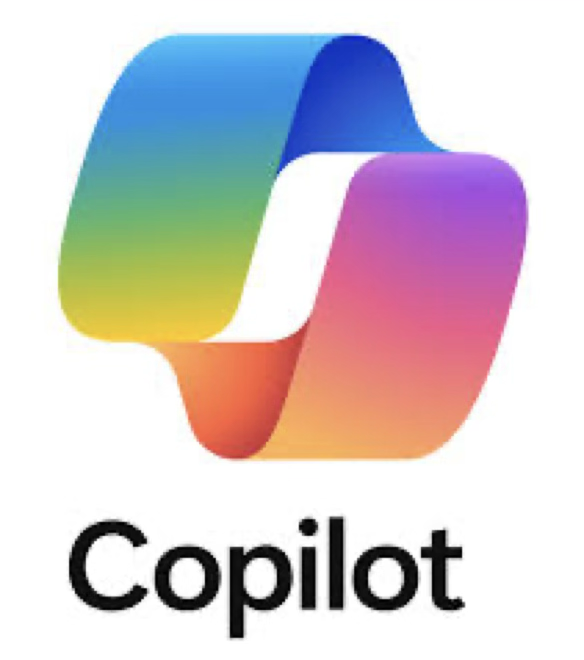
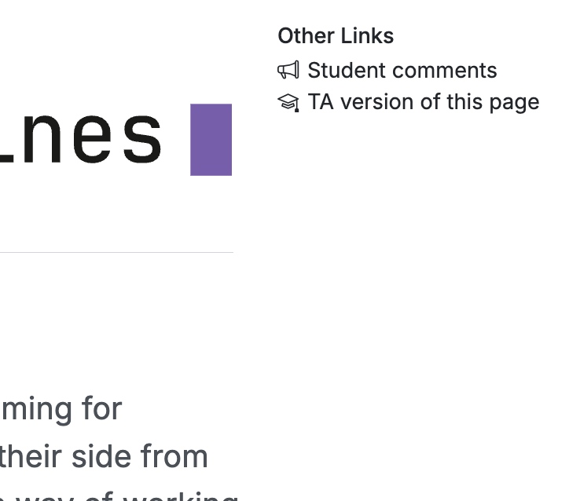
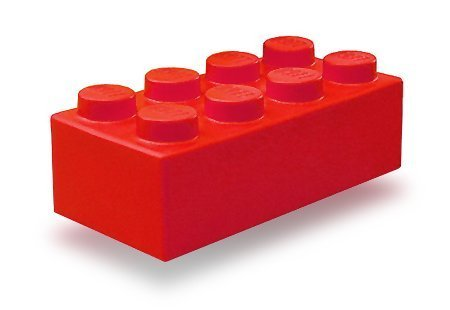
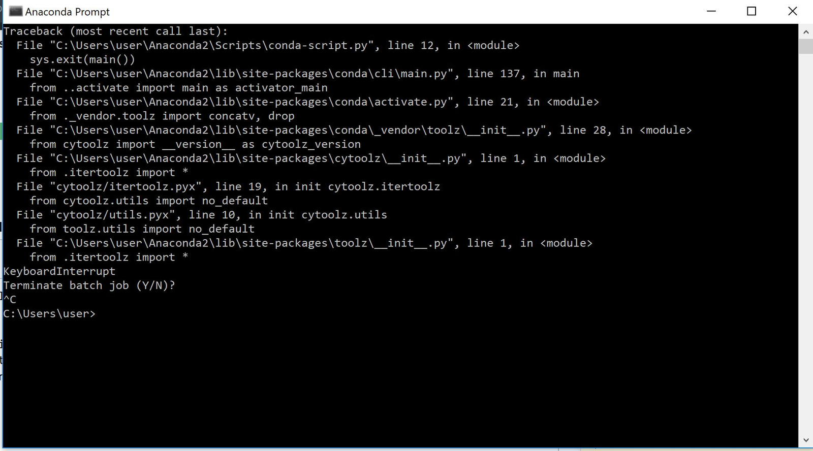
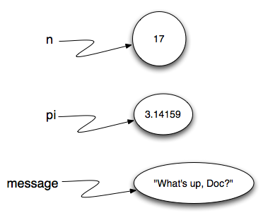
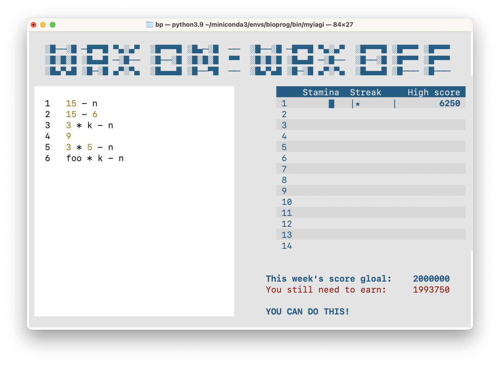

%%steps
3 + 2 * 4 + 9 # PRINT STEPS20Weeks 1–14
2026-09-01
How to download slides as PDF (Use Chrome or Firefox):
It is a thinking skill
Genetic surveillance
Epidemiology
Molecular biology
Evolutionary biology
Forensics
Parasite identification
Genetic screening
Animal breeding
Medical diagnosis
Vaccine development
Paternity testing
2001

2026

https://munch-group/instructing-machines
Anonymous comments, big and small,


A long sequence of simple instructions in a controlled order.
instructing-machines.



VScode
⭢
Windows PowerShell / Terminal
SyntaxError: when Python cannot recognize your code as Python code, it is not run at all.RuntimeError: a fault Python does not discover until your code runs.
| Operator | Operation |
|---|---|
+ |
plus |
- |
minus |
* |
times |
/ |
divide |
** |
exponent |
% |
modulo (remainder) |
// |
integer division |
| Level | Category | Operators |
|---|---|---|
| Highest | exponent | ** |
| multiplication | *, /, //, % |
|
| Lowest | addition | +, - |
(a piece of code that reduces to a value)
What happens if we leave out the print?


== |
equal to |
!= |
not equal to |
> |
greater than |
< |
less than |
>= |
greater than or equal to |
<= |
less than or equal to |
| Level | Category | Operators |
|---|---|---|
| Highest | exponent | ** |
| multiplication | *, /, //, % |
|
| addition | +, - |
|
| Lowest | relational | !=, ==, <=, >=, <, > |
TrueRelational operators produce a value that is either True or False
True
Turns true into false, and false into true
| Level | Category | Operators |
|---|---|---|
| Highest | exponent | ** |
| multiplication | *, /, //, % |
|
| addition | +, - |
|
| relational | !=, ==, <=, >=, <, > |
|
| Lowest | logical | not |
notnotLets us combine expressions that reduce to something true or false
| Level | Category | Operators |
|---|---|---|
| Highest | exponent | ** |
| multiplication | *, /, //, % |
|
| addition | +, - |
|
| relational | !=, ==, <=, >=, <, > |
|
| logical | not |
|
| logical | and |
|
| Lowest | logical | or |
andandReduction
andReduction
andandororReduction
orReduction
ororWhat is printed? 7 or 4?
True, False